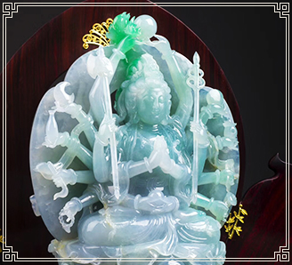

翡翠是最受中国人喜爱的珠宝，据统计，平均每三个中国人就拥有一件翡翠饰品。但是您真的了解翡翠吗？您以前是否买贵了？甚至是否买到过假货？


翡翠从原产地到工厂，再到商场，中间经过层层转手，很多品质一般的翡翠都已成了天价 。

为满足更多顾客的需求，给顾客带来最大的实惠。
寻梦开启全新的运营模式： 网络直播+专供代购，来【xunmeng2627】直播间，实名认证，实体店保驾护航，翡翠 放心选购。
再也不用担心被坑，再也不用担心买到贵货！让您足不出户，也能拥有最好的产品！


主播每天直播带您逛全国最大玉石市场，为您现场代购，现场挑货，直播在线下单，所见即所得。
好物捡漏，边看边买，逗比主播，幽默在线，有趣有料！

加微信【xunmeng2627】进群天天领福利，与天南地北的翡翠爱好者们畅聊！充足的货源，多样的款式，让您乐不停！

在线近距离观看主播试戴宝贝，让您美不停！
真实多角度多光线视角实拍，让您看不停！
和主播直接沟通咨询，让您学不停！
最重要的是，主播当场帮您砍价，让您赚不停！
想买翡翠但不知道怎么鉴别真假？ 产品琳琅满目，价格却参差不齐？ 究竟到哪里才能找到一个靠谱的翡翠卖家？ 在你想买翡翠时，脑子里是不是一直充斥着这些疑问？
现在，找【xunmeng2627】就对了！
有些东西，爱上了就是一辈子。
「 一个阴冷的冬日，难得出了太阳，暖暖的洒在了街上，街坊四邻闷了一个冬天的老头老太慢慢的搬出了小椅子，眯着昏花的老眼懒懒的坐着、看着，一脸满足后的慈祥 」。
「 不知道大家是为何爱上的翡翠，但我确是因为感受到了它的温暖，如冬日难得的太阳般的温暖。或许是因为自己格外的孤独，于是就想买块翡翠来佩戴把玩，当时还是对翡翠一知半解的小白一个，但几百块钱的怀古确让我感到温润异常，每天爱不释手后的把玩让我知道即使全世界都背离了我而它却不会，虽然不懂得种水色工却让我看到了它的灵透、它的飘花和它的含蓄。于是我就疯狂的迷上了关于翡翠的一切……」
一世情缘梦翡翠，冰谷柔润绿莹翠。
这就是寻梦的品牌创始人寻梦的翡翠故事，寻梦也希望把更多关于翡翠的传说和故事，传递给每一个人！愿您“翡”凡人生，“翠”灿百年。
寻梦品牌 创立于2013年，公司总部位于河北石家庄，是一家专门致力于翡翠开采、加工、批发兼零售的综合性大公司。我们拥有一批技艺精通、实践经验丰富的专家级人才，以选料为主，从设计到加工都严格把关，确保每一件产品独具匠心，成就专属于您的翡翠传奇！
随着对翡翠市场脉搏的精准把握，寻梦从2013年启动网络销售业务至今，秉承着诚信为先 的经营原则，以合理的价位、精美的做工，品牌知名度迅速提升，购买者如潮，在行业中树立了良好的商业信誉。
寻梦所供的全部商品均自由退换货，假一赔万，并常年为全国百余家实体店持续供货，以多品种经营特色和薄利多销的诚信原则，赢得了越来越多的顾客的信任！
上万款优质精美的现代翡翠珍品，为您展示翡翠千面风采！“翡”你莫属，“翠”璨夺目。 家有翡翠一件福泽老少平安。
欢迎加微信号【xunmeng2627】说出您的需求，我们一定会给您最满意的答复！寻梦每天都会挑性价比最高的翡翠成品发布朋友圈，经常有顾客说，每天看看寻梦朋友圈里的产品，也是一种享受。
只要您也一样喜爱翡翠，就来和我们一起交流！
在静静的时光里，沐浴着温暖的阳光，听一首老歌，品一盏香茗，欣赏着属于自己独一无二的翡翠饰品。透过那莹莹光泽，体会造物主的神奇，一块顽石历经大自然的千万锤炼终成一方美玉。
欢迎加寻梦微信号 【xunmeng2627】
寻梦每天都会挑出性价比高的翡翠发朋友圈，供大家抢购！


黄金有价玉无价，翡翠稀美誉天下。